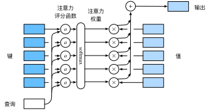

注意力评分函数
:label:sec_attention-scoring-functions
:numref:sec_nadaraya-watson使用了高斯核来对查询和键之间的关系建模。
:eqref:eq_nadaraya-watson-gaussian中的
高斯核指数部分可以视为注意力评分函数（attention scoring function），
简称评分函数（scoring function），
然后把这个函数的输出结果输入到softmax函数中进行运算。
通过上述步骤，将得到与键对应的值的概率分布（即注意力权重）。
最后，注意力汇聚的输出就是基于这些注意力权重的值的加权和。
从宏观来看，上述算法可以用来实现
:numref:fig_qkv中的注意力机制框架。
:numref:fig_attention_output说明了
如何将注意力汇聚的输出计算成为值的加权和，
其中$a$表示注意力评分函数。
由于注意力权重是概率分布，
因此加权和其本质上是加权平均值。

:label:fig_attention_output
用数学语言描述，假设有一个查询 $\mathbf{q} \in \mathbb{R}^q$和 $m$个“键－值”对 $(\mathbf{k}_1, \mathbf{v}_1), \ldots, (\mathbf{k}_m, \mathbf{v}_m)$， 其中$\mathbf{k}_i \in \mathbb{R}^k$，$\mathbf{v}_i \in \mathbb{R}^v$。 注意力汇聚函数$f$就被表示成值的加权和：
$$f(\mathbf{q}, (\mathbf{k}1, \mathbf{v}_1), \ldots, (\mathbf{k}_m, \mathbf{v}_m)) = \sum{i=1}^m \alpha(\mathbf{q}, \mathbf{k}_i) \mathbf{v}_i \in \mathbb{R}^v,$$
:eqlabel:eq_attn-pooling
其中查询$\mathbf{q}$和键$\mathbf{k}_i$的注意力权重（标量） 是通过注意力评分函数$a$将两个向量映射成标量， 再经过softmax运算得到的：
$$\alpha(\mathbf{q}, \mathbf{k}i) = \mathrm{softmax}(a(\mathbf{q}, \mathbf{k}_i)) = \frac{\exp(a(\mathbf{q}, \mathbf{k}_i))}{\sum{j=1}^m \exp(a(\mathbf{q}, \mathbf{k}_j))} \in \mathbb{R}.$$
:eqlabel:eq_attn-scoring-alpha
正如上图所示，选择不同的注意力评分函数$a$会导致不同的注意力汇聚操作。 本节将介绍两个流行的评分函数，稍后将用他们来实现更复杂的注意力机制。
import math
from d2l import mxnet as d2l
from mxnet import np, npx
from mxnet.gluon import nn
npx.set_np()
#@tab pytorch
from d2l import torch as d2l
import math
import torch
from torch import nn
#@tab tensorflow
from d2l import tensorflow as d2l
import tensorflow as tf
#@tab paddle
from d2l import paddle as d2l
import math
import warnings
warnings.filterwarnings("ignore")
import paddle
from paddle import nn
[掩蔽softmax操作]
正如上面提到的，softmax操作用于输出一个概率分布作为注意力权重。
在某些情况下，并非所有的值都应该被纳入到注意力汇聚中。
例如，为了在 :numref:sec_machine_translation中高效处理小批量数据集，
某些文本序列被填充了没有意义的特殊词元。
为了仅将有意义的词元作为值来获取注意力汇聚，
可以指定一个有效序列长度（即词元的个数），
以便在计算softmax时过滤掉超出指定范围的位置。
下面的masked_softmax函数
实现了这样的掩蔽softmax操作（masked softmax operation），
其中任何超出有效长度的位置都被掩蔽并置为0。
#@save
def masked_softmax(X, valid_lens):
"""通过在最后一个轴上掩蔽元素来执行softmax操作"""
# X:3D张量，valid_lens:1D或2D张量
if valid_lens is None:
return npx.softmax(X)
else:
shape = X.shape
if valid_lens.ndim == 1:
valid_lens = valid_lens.repeat(shape[1])
else:
valid_lens = valid_lens.reshape(-1)
# 最后一轴上被掩蔽的元素使用一个非常大的负值替换，从而其softmax输出为0
X = npx.sequence_mask(X.reshape(-1, shape[-1]), valid_lens, True,
value=-1e6, axis=1)
return npx.softmax(X).reshape(shape)
#@tab pytorch
#@save
def masked_softmax(X, valid_lens):
"""通过在最后一个轴上掩蔽元素来执行softmax操作"""
# X:3D张量，valid_lens:1D或2D张量
if valid_lens is None:
return nn.functional.softmax(X, dim=-1)
else:
shape = X.shape
if valid_lens.dim() == 1:
valid_lens = torch.repeat_interleave(valid_lens, shape[1])
else:
valid_lens = valid_lens.reshape(-1)
# 最后一轴上被掩蔽的元素使用一个非常大的负值替换，从而其softmax输出为0
X = d2l.sequence_mask(X.reshape(-1, shape[-1]), valid_lens,
value=-1e6)
return nn.functional.softmax(X.reshape(shape), dim=-1)
#@tab tensorflow
#@save
def masked_softmax(X, valid_lens):
"""通过在最后一个轴上掩蔽元素来执行softmax操作"""
# X:3D张量，valid_lens:1D或2D张量
if valid_lens is None:
return tf.nn.softmax(X, axis=-1)
else:
shape = X.shape
if len(valid_lens.shape) == 1:
valid_lens = tf.repeat(valid_lens, repeats=shape[1])
else:
valid_lens = tf.reshape(valid_lens, shape=-1)
# 最后一轴上被掩蔽的元素使用一个非常大的负值替换，从而其softmax输出为0
X = d2l.sequence_mask(tf.reshape(X, shape=(-1, shape[-1])),
valid_lens, value=-1e6)
return tf.nn.softmax(tf.reshape(X, shape=shape), axis=-1)
#@tab paddle
#@save
def masked_softmax(X, valid_lens):
"""通过在最后一个轴上掩蔽元素来执行softmax操作"""
# X:3D张量，valid_lens:1D或2D张量
if valid_lens is None:
return nn.functional.softmax(X, axis=-1)
else:
shape = X.shape
if valid_lens.dim() == 1:
valid_lens = paddle.repeat_interleave(valid_lens, shape[1])
else:
valid_lens = valid_lens.reshape((-1,))
# 最后一轴上被掩蔽的元素使用一个非常大的负值替换，从而其softmax输出为0
X = d2l.sequence_mask(X.reshape((-1, shape[-1])), valid_lens,
value=-1e6)
return nn.functional.softmax(X.reshape(shape), axis=-1)
为了[演示此函数是如何工作]的， 考虑由两个$2 \times 4$矩阵表示的样本， 这两个样本的有效长度分别为$2$和$3$。 经过掩蔽softmax操作，超出有效长度的值都被掩蔽为0。
masked_softmax(np.random.uniform(size=(2, 2, 4)), d2l.tensor([2, 3]))
#@tab pytorch
masked_softmax(torch.rand(2, 2, 4), torch.tensor([2, 3]))
#@tab tensorflow
masked_softmax(tf.random.uniform(shape=(2, 2, 4)), tf.constant([2, 3]))
#@tab paddle
masked_softmax(paddle.rand((2, 2, 4)), paddle.to_tensor([2, 3]))
同样，也可以使用二维张量，为矩阵样本中的每一行指定有效长度。
masked_softmax(np.random.uniform(size=(2, 2, 4)),
d2l.tensor([[1, 3], [2, 4]]))
#@tab pytorch
masked_softmax(torch.rand(2, 2, 4), d2l.tensor([[1, 3], [2, 4]]))
#@tab tensorflow
masked_softmax(tf.random.uniform(shape=(2, 2, 4)), tf.constant([[1, 3], [2, 4]]))
#@tab paddle
masked_softmax(paddle.rand((2, 2, 4)), paddle.to_tensor([[1, 3], [2, 4]]))
[加性注意力]
:label:subsec_additive-attention
一般来说，当查询和键是不同长度的矢量时，可以使用加性注意力作为评分函数。 给定查询$\mathbf{q} \in \mathbb{R}^q$和 键$\mathbf{k} \in \mathbb{R}^k$， 加性注意力（additive attention）的评分函数为
$$a(\mathbf q, \mathbf k) = \mathbf w_v^\top \text{tanh}(\mathbf W_q\mathbf q + \mathbf W_k \mathbf k) \in \mathbb{R},$$
:eqlabel:eq_additive-attn
其中可学习的参数是$\mathbf W_q\in\mathbb R^{h\times q}$、
$\mathbf W_k\in\mathbb R^{h\times k}$和
$\mathbf w_v\in\mathbb R^{h}$。
如 :eqref:eq_additive-attn所示，
将查询和键连结起来后输入到一个多层感知机（MLP）中，
感知机包含一个隐藏层，其隐藏单元数是一个超参数$h$。
通过使用$\tanh$作为激活函数，并且禁用偏置项。
下面来实现加性注意力。
#@save
class AdditiveAttention(nn.Block):
"""加性注意力"""
def __init__(self, num_hiddens, dropout, **kwargs):
super(AdditiveAttention, self).__init__(**kwargs)
# 使用'flatten=False'只转换最后一个轴，以便其他轴的形状保持不变
self.W_k = nn.Dense(num_hiddens, use_bias=False, flatten=False)
self.W_q = nn.Dense(num_hiddens, use_bias=False, flatten=False)
self.w_v = nn.Dense(1, use_bias=False, flatten=False)
self.dropout = nn.Dropout(dropout)
def forward(self, queries, keys, values, valid_lens):
queries, keys = self.W_q(queries), self.W_k(keys)
# 在维度扩展后，
# queries的形状：(batch_size，查询的个数，1，num_hidden)
# key的形状：(batch_size，1，“键－值”对的个数，num_hiddens)
# 使用广播的方式进行求和
features = np.expand_dims(queries, axis=2) + np.expand_dims(
keys, axis=1)
features = np.tanh(features)
# self.w_v仅有一个输出，因此从形状中移除最后那个维度。
# scores的形状：(batch_size，查询的个数，“键-值”对的个数)
scores = np.squeeze(self.w_v(features), axis=-1)
self.attention_weights = masked_softmax(scores, valid_lens)
# values的形状：(batch_size，“键－值”对的个数，值的维度)
return npx.batch_dot(self.dropout(self.attention_weights), values)
#@tab pytorch
#@save
class AdditiveAttention(nn.Module):
"""加性注意力"""
def __init__(self, key_size, query_size, num_hiddens, dropout, **kwargs):
super(AdditiveAttention, self).__init__(**kwargs)
self.W_k = nn.Linear(key_size, num_hiddens, bias=False)
self.W_q = nn.Linear(query_size, num_hiddens, bias=False)
self.w_v = nn.Linear(num_hiddens, 1, bias=False)
self.dropout = nn.Dropout(dropout)
def forward(self, queries, keys, values, valid_lens):
queries, keys = self.W_q(queries), self.W_k(keys)
# 在维度扩展后，
# queries的形状：(batch_size，查询的个数，1，num_hidden)
# key的形状：(batch_size，1，“键－值”对的个数，num_hiddens)
# 使用广播方式进行求和
features = queries.unsqueeze(2) + keys.unsqueeze(1)
features = torch.tanh(features)
# self.w_v仅有一个输出，因此从形状中移除最后那个维度。
# scores的形状：(batch_size，查询的个数，“键-值”对的个数)
scores = self.w_v(features).squeeze(-1)
self.attention_weights = masked_softmax(scores, valid_lens)
# values的形状：(batch_size，“键－值”对的个数，值的维度)
return torch.bmm(self.dropout(self.attention_weights), values)
#@tab tensorflow
#@save
class AdditiveAttention(tf.keras.layers.Layer):
"""Additiveattention."""
def __init__(self, key_size, query_size, num_hiddens, dropout, **kwargs):
super().__init__(**kwargs)
self.W_k = tf.keras.layers.Dense(num_hiddens, use_bias=False)
self.W_q = tf.keras.layers.Dense(num_hiddens, use_bias=False)
self.w_v = tf.keras.layers.Dense(1, use_bias=False)
self.dropout = tf.keras.layers.Dropout(dropout)
def call(self, queries, keys, values, valid_lens, **kwargs):
queries, keys = self.W_q(queries), self.W_k(keys)
# 在维度扩展后，
# queries的形状：(batch_size，查询的个数，1，num_hidden)
# key的形状：(batch_size，1，“键－值”对的个数，num_hiddens)
# 使用广播方式进行求和
features = tf.expand_dims(queries, axis=2) + tf.expand_dims(
keys, axis=1)
features = tf.nn.tanh(features)
# self.w_v仅有一个输出，因此从形状中移除最后那个维度。
# scores的形状：(batch_size，查询的个数，“键-值”对的个数)
scores = tf.squeeze(self.w_v(features), axis=-1)
self.attention_weights = masked_softmax(scores, valid_lens)
# values的形状：(batch_size，“键－值”对的个数，值的维度)
return tf.matmul(self.dropout(
self.attention_weights, **kwargs), values)
#@tab paddle
#@save
class AdditiveAttention(nn.Layer):
"""加性注意力"""
def __init__(self, key_size, query_size, num_hiddens, dropout, **kwargs):
super(AdditiveAttention, self).__init__(**kwargs)
self.W_k = nn.Linear(key_size, num_hiddens, bias_attr=False)
self.W_q = nn.Linear(query_size, num_hiddens, bias_attr=False)
self.w_v = nn.Linear(num_hiddens, 1, bias_attr=False)
self.dropout = nn.Dropout(dropout)
def forward(self, queries, keys, values, valid_lens):
queries, keys = self.W_q(queries), self.W_k(keys)
# 在维度扩展后，
# queries的形状：(batch_size，查询的个数，1，num_hidden)
# key的形状：(batch_size，1，“键－值”对的个数，num_hiddens)
# 使用广播方式进行求和
features = queries.unsqueeze(2) + keys.unsqueeze(1)
features = paddle.tanh(features)
# self.w_v仅有一个输出，因此从形状中移除最后那个维度。
# scores的形状：(batch_size，查询的个数，“键-值”对的个数)
scores = self.w_v(features).squeeze(-1)
self.attention_weights = masked_softmax(scores, valid_lens)
# values的形状：(batch_size，“键－值”对的个数，值的维度)
return paddle.bmm(self.dropout(self.attention_weights), values)
用一个小例子来[演示上面的AdditiveAttention类]，
其中查询、键和值的形状为（批量大小，步数或词元序列长度，特征大小），
实际输出为$(2,1,20)$、$(2,10,2)$和$(2,10,4)$。
注意力汇聚输出的形状为（批量大小，查询的步数，值的维度）。
queries, keys = d2l.normal(0, 1, (2, 1, 20)), d2l.ones((2, 10, 2))
# values的小批量数据集中，两个值矩阵是相同的
values = np.arange(40).reshape(1, 10, 4).repeat(2, axis=0)
valid_lens = d2l.tensor([2, 6])
attention = AdditiveAttention(num_hiddens=8, dropout=0.1)
attention.initialize()
attention(queries, keys, values, valid_lens)
#@tab pytorch
queries, keys = d2l.normal(0, 1, (2, 1, 20)), d2l.ones((2, 10, 2))
# values的小批量，两个值矩阵是相同的
values = torch.arange(40, dtype=torch.float32).reshape(1, 10, 4).repeat(
2, 1, 1)
valid_lens = d2l.tensor([2, 6])
attention = AdditiveAttention(key_size=2, query_size=20, num_hiddens=8,
dropout=0.1)
attention.eval()
attention(queries, keys, values, valid_lens)
#@tab tensorflow
queries, keys = tf.random.normal(shape=(2, 1, 20)), tf.ones((2, 10, 2))
# values的小批量，两个值矩阵是相同的
values = tf.repeat(tf.reshape(
tf.range(40, dtype=tf.float32), shape=(1, 10, 4)), repeats=2, axis=0)
valid_lens = tf.constant([2, 6])
attention = AdditiveAttention(key_size=2, query_size=20, num_hiddens=8,
dropout=0.1)
attention(queries, keys, values, valid_lens, training=False)
#@tab paddle
queries, keys = paddle.normal(0, 1, (2, 1, 20)), paddle.ones((2, 10, 2))
# values的小批量，两个值矩阵是相同的
values = paddle.arange(40, dtype=paddle.float32).reshape((1, 10, 4)).tile(
[2, 1, 1])
valid_lens = paddle.to_tensor([2, 6])
attention = AdditiveAttention(key_size=2, query_size=20, num_hiddens=8,
dropout=0.1)
attention.eval()
attention(queries, keys, values, valid_lens)
尽管加性注意力包含了可学习的参数，但由于本例子中每个键都是相同的， 所以[注意力权重]是均匀的，由指定的有效长度决定。
#@tab all
d2l.show_heatmaps(d2l.reshape(attention.attention_weights, (1, 1, 2, 10)),
xlabel='Keys', ylabel='Queries')
[缩放点积注意力]
使用点积可以得到计算效率更高的评分函数， 但是点积操作要求查询和键具有相同的长度$d$。 假设查询和键的所有元素都是独立的随机变量， 并且都满足零均值和单位方差， 那么两个向量的点积的均值为$0$，方差为$d$。 为确保无论向量长度如何， 点积的方差在不考虑向量长度的情况下仍然是$1$， 我们再将点积除以$\sqrt{d}$， 则缩放点积注意力（scaled dot-product attention）评分函数为：
$$a(\mathbf q, \mathbf k) = \mathbf{q}^\top \mathbf{k} /\sqrt{d}.$$
在实践中，我们通常从小批量的角度来考虑提高效率， 例如基于$n$个查询和$m$个键－值对计算注意力， 其中查询和键的长度为$d$，值的长度为$v$。 查询$\mathbf Q\in\mathbb R^{n\times d}$、 键$\mathbf K\in\mathbb R^{m\times d}$和 值$\mathbf V\in\mathbb R^{m\times v}$的缩放点积注意力是：
$$ \mathrm{softmax}\left(\frac{\mathbf Q \mathbf K^\top }{\sqrt{d} }\right) \mathbf V \in \mathbb{R}^{n\times v}.$$
:eqlabel:eq_softmax_QK_V
下面的缩放点积注意力的实现使用了暂退法进行模型正则化。
#@save
class DotProductAttention(nn.Block):
"""缩放点积注意力"""
def __init__(self, dropout, **kwargs):
super(DotProductAttention, self).__init__(**kwargs)
self.dropout = nn.Dropout(dropout)
# queries的形状：(batch_size，查询的个数，d)
# keys的形状：(batch_size，“键－值”对的个数，d)
# values的形状：(batch_size，“键－值”对的个数，值的维度)
# valid_lens的形状:(batch_size，)或者(batch_size，查询的个数)
def forward(self, queries, keys, values, valid_lens=None):
d = queries.shape[-1]
# 设置transpose_b=True为了交换keys的最后两个维度
scores = npx.batch_dot(queries, keys, transpose_b=True) / math.sqrt(d)
self.attention_weights = masked_softmax(scores, valid_lens)
return npx.batch_dot(self.dropout(self.attention_weights), values)
#@tab pytorch
#@save
class DotProductAttention(nn.Module):
"""缩放点积注意力"""
def __init__(self, dropout, **kwargs):
super(DotProductAttention, self).__init__(**kwargs)
self.dropout = nn.Dropout(dropout)
# queries的形状：(batch_size，查询的个数，d)
# keys的形状：(batch_size，“键－值”对的个数，d)
# values的形状：(batch_size，“键－值”对的个数，值的维度)
# valid_lens的形状:(batch_size，)或者(batch_size，查询的个数)
def forward(self, queries, keys, values, valid_lens=None):
d = queries.shape[-1]
# 设置transpose_b=True为了交换keys的最后两个维度
scores = torch.bmm(queries, keys.transpose(1,2)) / math.sqrt(d)
self.attention_weights = masked_softmax(scores, valid_lens)
return torch.bmm(self.dropout(self.attention_weights), values)
#@tab tensorflow
#@save
class DotProductAttention(tf.keras.layers.Layer):
"""Scaleddotproductattention."""
def __init__(self, dropout, **kwargs):
super().__init__(**kwargs)
self.dropout = tf.keras.layers.Dropout(dropout)
# queries的形状：(batch_size，查询的个数，d)
# keys的形状：(batch_size，“键－值”对的个数，d)
# values的形状：(batch_size，“键－值”对的个数，值的维度)
# valid_lens的形状:(batch_size，)或者(batch_size，查询的个数)
def call(self, queries, keys, values, valid_lens, **kwargs):
d = queries.shape[-1]
scores = tf.matmul(queries, keys, transpose_b=True)/tf.math.sqrt(
tf.cast(d, dtype=tf.float32))
self.attention_weights = masked_softmax(scores, valid_lens)
return tf.matmul(self.dropout(self.attention_weights, **kwargs), values)
#@tab paddle
#@save
class DotProductAttention(nn.Layer):
"""缩放点积注意力"""
def __init__(self, dropout, **kwargs):
super(DotProductAttention, self).__init__(**kwargs)
self.dropout = nn.Dropout(dropout)
# queries的形状：(batch_size，查询的个数，d)
# keys的形状：(batch_size，“键－值”对的个数，d)
# values的形状：(batch_size，“键－值”对的个数，值的维度)
# valid_lens的形状:(batch_size，)或者(batch_size，查询的个数)
def forward(self, queries, keys, values, valid_lens=None):
d = queries.shape[-1]
# 设置transpose_b=True为了交换keys的最后两个维度
scores = paddle.bmm(queries, keys.transpose((0,2,1))) / math.sqrt(d)
self.attention_weights = masked_softmax(scores, valid_lens)
return paddle.bmm(self.dropout(self.attention_weights), values)
为了[演示上述的DotProductAttention类]，
我们使用与先前加性注意力例子中相同的键、值和有效长度。
对于点积操作，我们令查询的特征维度与键的特征维度大小相同。
queries = d2l.normal(0, 1, (2, 1, 2))
attention = DotProductAttention(dropout=0.5)
attention.initialize()
attention(queries, keys, values, valid_lens)
#@tab pytorch
queries = d2l.normal(0, 1, (2, 1, 2))
attention = DotProductAttention(dropout=0.5)
attention.eval()
attention(queries, keys, values, valid_lens)
#@tab tensorflow
queries = tf.random.normal(shape=(2, 1, 2))
attention = DotProductAttention(dropout=0.5)
attention(queries, keys, values, valid_lens, training=False)
#@tab paddle
queries = paddle.normal(0, 1, (2, 1, 2))
attention = DotProductAttention(dropout=0.5)
attention.eval()
attention(queries, keys, values, valid_lens)
与加性注意力演示相同，由于键包含的是相同的元素， 而这些元素无法通过任何查询进行区分，因此获得了[均匀的注意力权重]。
#@tab all
d2l.show_heatmaps(d2l.reshape(attention.attention_weights, (1, 1, 2, 10)),
xlabel='Keys', ylabel='Queries')
小结
- 将注意力汇聚的输出计算可以作为值的加权平均，选择不同的注意力评分函数会带来不同的注意力汇聚操作。
- 当查询和键是不同长度的矢量时，可以使用可加性注意力评分函数。当它们的长度相同时，使用缩放的“点－积”注意力评分函数的计算效率更高。
练习
- 修改小例子中的键，并且可视化注意力权重。可加性注意力和缩放的“点－积”注意力是否仍然产生相同的结果？为什么？
- 只使用矩阵乘法，能否为具有不同矢量长度的查询和键设计新的评分函数？
- 当查询和键具有相同的矢量长度时，矢量求和作为评分函数是否比“点－积”更好？为什么？
:begin_tab:mxnet
Discussions
:end_tab:
:begin_tab:pytorch
Discussions
:end_tab:
:begin_tab:paddle
Discussions
:end_tab: